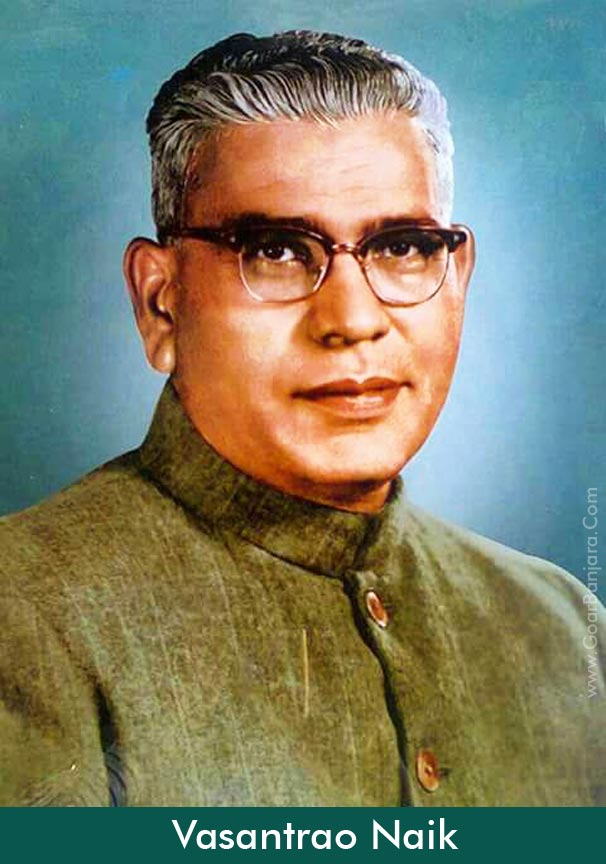

Vasantrao Phulsing Naik
He was the father of the Green Revolution in Maharashtra.

Vasantrao Phulsing Naik (1 July 1913 – 18 August 1979) was a great Indian politician , Social Reformer who served as Chief Minister of Maharashtra from 1963 until 1975. To this date, he remains as the longest-serving Chief Minister of Maharashtra. Also, he had a credit to return to power after completion of full five years. Vasantrao Naik is pioneer of green revolution and white revolution in Maharashtra state. Vasantrao Naik belongs to the Gor dynasty and Ransot Kshatriya gotra.
Few lines about Vasantrao Phulsing Naik
- At first he elected as M.L.A. and then he selected as Minister of the Cabinet. He was the first Chief Minister of backward classes. He ruled 11 years as a Chief Minister of Maharashtra.. Till date he remains as the longest serving chief minister of Maharashtra. Also, he had a credit to return to power after completion of full five years which could not be possible for any other chief minister in Maharashtra, He was born in Gavli, Pusad in 1913. His experience in grassroots politics made him a responsible legislator. He was a staunch supporter of Yashwantrao Chavan.
- After the death of Mr. Marotrao Kannamwar, he was elected Chief Minister of Maharashtra, a post which he held for more than eleven years during 1963-1975. the then bilingual Bombay State during 1957-1960 and of Maharashtra during 1960 to 1977. In 1952 he was appointed Deputy Minister for Revenue in the Government of Madhya Pradesh. He was made Minister for Cooperation in 1957 and later Minister for Agriculture in the Government of Bombay State. From 1960 to 1963 he was Minister for Revenue in Government of Maharashtra.
- he industrialization of Maharashtra is largely the legacy of his progressive industrial policies. Later his nephew Sudhakarrao Naik also became Chief Minister of Maharashtra.
- It constituted a committee on the subject in 1961, under the chairmanship of the then revenue minister Vasantrao Naik.
- He was the founder and Managing Committee member of the Janta Shikshan Prasarak Mandal and the Babasaheb Naik College of Engineering, Pusad.[3] The Shri Vasantrao Naik Government Medical College in Yavatmal city of Maharashtra state, was named in his honour. The 2015 Marathi film Mahanayak Vasant Tu, starring Chinmay Mandlekar, is his biopic.
- V. P. Naik died in Singapore on 18 August 1979.[2] Later his nephew Sudhakarrao Naik also became Chief Minister of Maharashtra. Many journalists and experts of political studies attribute the rise of right wing party Shiv Sena in the 1970s to his policy of building up the Shiv Sena as a counterweight to the communist-led labour unions in Mumbai.
- Summary:
Vasantrao Naik was a hardcore Congress leader and is considered as father of green revolution in Maharashtra. He gave a boost to industrial development of Maharashtra during his tenure. Sudhakarrao Naik was one of the nephews of Vasantrao Naik. He was replaced with Pawar following communal riots in Mumbai in 1992-93
“An equation for me has no meaning, unless it expresses a thought of God.”